СТРОИТЕЛЬНЫЕ НОРМЫ И ПРАВИЛА
АРМОЦЕМЕНТНЫЕ КОНСТРУКЦИИ
СНиП 2.03.03-85
ГОСУДАРСТВЕННЫЙ КОМИТЕТ СССР ПО ДЕЛАМ СТРОИТЕЛЬСТВА
Москва 1985
РАЗРАБОТАНЫ НИИЖБ Госстроя СССР (д-р техн. наук, проф. Г.К. Хайдуков - руководитель темы; кандидаты техн. наук Е.К. Качановский, В.В. Фигаровский, М.Д. Роженко), НИИСК Госстроя СССР (канд. техн. наук В.Д. Галич), ЛенЗНИИЭП Госгражданстроя (канд. техн. наук Б.А. Миронков).
ВНЕСЕНЫ НИИЖБ Госстроя СССР.
ПОДГОТОВЛЕНЫ К УТВЕРЖДЕНИЮ Главтехнормированием Госстроя СССР (В.М. Скубко).
С введением в действие СНиП 2.03.03-85 «Армоцементные конструкции» с 1 июля 1986 г. утрачивает силу Инструкция по проектированию армоцементных конструкций (СН 366-77).
При пользовании нормативным документом следует учитывать утвержденные изменения строительных норм и правил и государственных стандартов, публикуемые в журнале «Бюллетень строительной техники» Госстроя СССР и информационном указателе «Государственные стандарты СССР» Госстандарта.
|
Государственный комитет СССР |
Строительные нормы и правила |
СНиП 2.03.03-85 |
|
Армоцементные конструкции |
Взамен СН 366-77 |
Настоящие нормы распространяются на проектирование армоцементных конструкций - тонкостенных железобетонных конструкций (толщиной до 30 мм включительно), изготовляемых из мелкозернистого бетона, в качестве арматуры которых следует применять:
частые тонкие тканые, сварные или плетеные проволочные сетки, равномерно распределенные по сечению элемента (сетчатое армирование); частые тонкие тканые, сварные или плетеные проволочные сетки, равномерно распределенные по сечению элемента, в сочетании со стержневой или проволочной арматурой (комбинированное армирование).
Нормы устанавливают требования по проектированию армоцементных конструкций, предназначенных для работы при систематическом воздействии температуры не выше 50 °С не ниже минус 70 °С.
При проектировании армоцементных конструкций, предназначенных для работы в условиях с систематическим воздействием температуры выше 50 °С, в среде с агрессивной степенью воздействия на железобетонные конструкции, необходимо учитывать дополнительные требования, предъявляемые к таким конструкциям соответствующими нормативными документами.
По показателям прочности бетона приняты классы бетона в соответствии с СТ СЭВ 1406-78.
Основные буквенные обозначения, принятые в настоящих нормах согласий СТ СЭВ 1565-79, приведены в справочном приложении 1.
|
Внесены |
Утверждены |
Срок |
1. ОБЩИЕ УКАЗАНИЯ
ОСНОВНЫЕ ПОЛОЖЕНИЯ
1.1. Армоцементные конструкции в зависимости от их армирования подразделяют на конструкции:
с сетчатым армированием - при их армировании частыми тонкими ткаными, сварными или плетеными проволочными сетками, равномерно распределенными по сечению элемента (черт. 1, а);
с комбинированным армированием - при их армировании указанными сетками, равномерно распределенными по сечению элемента, в сочетании со стержневой или проволочной арматурой (черт. 1, б).
Черт. 1. Армирование армоцементных конструкций
а - сетчатое; б - комбинированное; 1 - частые тонкие тканые сетки; 2 - частые тонкие сварные сетки; 3 - стержневая или проволочная арматура
1.2. Армоцементные конструкции согласно СТ СЭВ 1406-78 должны быть обеспечены с требуемой надежностью от возникновения всех видов предельных состояний с помощью расчета, выбором материалов, установлением размеров элементов и их конструированием.
1.3. Армоцементные конструкции должны применяться, как правило, в неагрессивной среде.
Допускается применение армоцементных конструкций в среде со слабой степенью агрессивного воздействия на железобетонные конструкции при выполнении требований, установленных СНиП II-28-73 для таких конструкций.
1.4. Выбор конструктивных решений армоцементных конструкций должен производиться исходя из технико-экономической целесообразности применения таких конструкций в конкретных условиях строительства с учетом максимального снижения их материалоемкости, трудо- и энергоемкости и стоимости.
Армоцементные конструкции рекомендуется применять в элементах зданий и сооружений, для которых существенное значение имеют снижение собственного веса, уменьшение раскрытия трещин и обеспечение водонепроницаемости бетона.
1.5. При выборе конструктивных решений должны учитываться методы изготовления, монтажа и условия эксплуатации конструкций.
Форма и размеры элементов должны приниматься исходя из наиболее полного учета свойств армоцементных конструкций, возможности заводского механизированного изготовления, удобства транспортирования и монтажа конструкций.
1.6. Армоцементные конструкции допускается применять в качестве опалубки для монолитных железобетонных конструкций.
Для обеспечения совместной работы армоцементной опалубки и монолитного бетона на поверхности армоцементной опалубки должны быть выполнены пазы шириной до 10 мм, глубиной до 5 мм с шагом до 100 мм, а поверхность армоцементной опалубки должна быть обработана стальной щеткой и обдута сжатым воздухом. Для связи арматуры несъемной армоцементной опалубки с основной арматурой конструкции необходимо предусматривать в опалубке выпуски сеток и стержней.
1.7. Армоцементные конструкции и отдельные их элементы должны обладать необходимой прочностью, жесткостью, трещиностойкостью, устойчивостью и пространственной неизменяемостью на стадиях изготовления, транспортирования, монтажа и эксплуатации.
1.8. При проектировании сборных армоцементных конструкций особое внимание необходимо обращать на прочность, долговечность и технологичность соединений и узлов. Соединения и узлы сборных ограждающих конструкций должны удовлетворять также специальным требованиям к этим ограждениям (обеспечивать передачу усилий элементам несущих конструкций, выполнение теплотехнических требований, заданной деформативности и др.).
1.9. Для предотвращения появления трещин, местных выколов и других дефектов армоцементных конструкций при их подъеме в процессе изготовления, складирования, транспортирования и монтажа следует применять специальные приспособления. Как правило, должен применяться беспетлевой подъем армоцементных конструкций.
Основные расчетные требования
1.10. Армоцементные конструкции должны удовлетворять требованиям расчета по несущей способности (предельные состояния первой группы) и по пригодности к нормальной эксплуатации (предельные состояния второй группы) согласно положениям СНиП 2.03.01-84 и настоящих норм, учитывающих особенности армоцементных конструкций:
а) дисперсность армирования;
6) тонкостенность конструкций;
в) уменьшенный защитный слой бетона.
1.11. Расчет армоцементных конструкций должен производиться на все возможные неблагоприятные сочетания нагрузок от собственного веса и внешней нагрузки с учетом продолжительности их воздействия для всех стадий работы конструкций: изготовления, транспортирования, возведения и эксплуатации.
1.12. Значения нагрузок и воздействий, коэффициентов перегрузок, коэффициентов сочетаний, а также разделение нагрузок на постоянные и временные (длительные, кратковременные, особые) должны приниматься в соответствии с требованиями СНиП II-6-74 и с учетом дополнительных указаний СНиП 2.03.01-84.
Нагрузки, учитываемые при расчете армоцементных конструкций по образованию и раскрытию трещин, следует принимать согласно указаниям п. 1.13, а учитываемые при расчете по деформациям - согласно СНиП 2.03.01-84.
а) 1-я категория - не допускается образование трещин;
б) 2-я категория - допускается ограниченное по ширине непродолжительное и продолжительное раскрытие трещин.
Категории требований к трещиностойкости армоцементных конструкций в зависимости от условий их работы и вида арматуры, а также значения предельно допустимой ширины раскрытия трещин приведены в табл. 1.
Нагрузки, учитываемые при расчете армоцементных конструкций по образованию и раскрытию трещин, должны приниматься согласно табл. 2
Категории требований к трещиностойкости армоцементных конструкций относятся к нормальным и наклонным к продольной оси элемента трещинам.
Во избежание раскрытия продольных трещин должны приниматься конструктивные меры (установка соответствующей сетчатой арматуры), а для предварительно напряженных элементов, кроме того, значения сжимающих напряжений в бетоне в стадии предварительного обжатия должны быть ограничены (см. п. 1.23).
Примечание. Под непродолжительным раскрытием трещин понимается их раскрытие при совместном действии постоянных, длительных и кратковременных нагрузок, а под продолжительным раскрытием - только постоянных и длительных нагрузок.
1.14. Усилия в статически неопределимых армоцементных конструкциях от нагрузок и вынужденных перемещений (вследствие изменения температуры, влажности бетона, смещения опор и т.п.) при расчете по предельным состояниям первой и второй групп следует, как правило, определять с учетом неупругих деформаций бетона и арматуры и наличия трещин, а также с учетом в необходимых случаях деформированного состояния как отдельных элементов, так и конструкций.
Для конструкций, методика расчета которых с учетом неупругих свойств армоцемента не разработана, а также на промежуточных стадиях расчета (итерационные методы, метод поправочных коэффициентов и т.п.) усилия в статически неопределимых конструкциях допускается определять в предположении их линейной упругости.
1.15. Статический расчет армоцементных конструкций в виде оболочек и складок следует выполнять как тонкостенных пространственных конструкций.
1.16. При расчете по прочности армоцементных конструкций на воздействие сжимающей продольной силы N необходимо учитывать случайный эксцентриситет еа согласно требованиям СНиП 2.03.01-84.
1.17. Определение прогибов армоцементных конструкций следует производить согласно требованиям пп. 4.8 - 4.16 и СНиП 2.03.01-84.
Значения предельно допустимых прогибов следует принимать согласно СНиП 2.03.01-84.
Таблица 1
|
Категории требований к трещиностойкости армоцементных конструкций и предельно допустимая ширина acrc1 и acrc2, мм, раскрытия трещин при армировании |
|||||
|
комбинированном |
сетчатом |
комбинированном |
|||
|
сетками и стержневой арматурой классов А-1, А-II - А-III и проволочной арматурой класса Вр-1 |
оцинкованными сетками и оцинкованной проволочной арматурой классов В-II, Bp-II, К-7 |
сетками и стержневой арматурой класса A-IV, A-V, с проволочной арматурой классов В-II и Вр-II, К-7 при диаметре проволоки 4 мм м более |
сетками и стержневой арматурой класса Ат-VI, с проволочной арматурой классов В-II, Bp-II и К-7 при диаметре проволоки менее 4 мм |
||
|
Элементы 1. С полностью растянутым или частично сжатым сечением, воспринимающие давление жидкостей или газов |
2-я категория acrc1 = 0,05 acrc2 = 0,03 |
2-я категория* acrc1 = 0,05 acrc2 = 0,03 |
1-я категория** |
1-я категория |
1-я категория |
|
2. Эксплуатируемые в отапливаемых зданиях с относительной влажностью внутреннего воздуха помещений выше 75 %, а также на открытом воздухе и в неотапливаемых зданиях в условиях увлажнения атмосферными осадками |
2-я категория acrc1 = 0,1 acrc2 = 0,25 |
2-я категория acrc1 = 0,12 acrc2 = 0,06 |
1-я категория** |
1-я категория |
1-я категория |
|
3. Эксплуатируемые в отапливаемых зданиях с относительной влажностью внутреннего воздуха помещений от 60 до 75 % |
2-я категория acrc1 = 0,15 acrc2 = 0,1 |
2-я категория acrc1 = 0,15 acrc2 = 0,1 |
2-я категория acrc1 = 0,07 acrc2 =0,05 |
2-я категория acrc1 = 0,07 acrc2 = 0,05 |
1-я категория |
|
4. Эксплуатируемые в отапливаемых зданиях с относительной влажностью внутреннего воздуха помещений до 60 % и при отсутствии возможности систематического увлажнения конструкции конденсатом |
2-я категория acrc1 = 0,2 acrc2 = 0,15 |
2-я категория acrc1 = 0,22 acrc2 = 0,15 |
2-я категория acrc1 = 0,15 acrc2 =0,1 |
2-я категория acrc1 = 0,15 acrc2 = 0,1 |
2-я категория acrc1 = 0,05 acrc2 = 0,03 |
|
* Категория требований к трещиностойкости принята при защитном покрытии сеток оцинковкой в 30 мкм в соответствии с ГОСТ 9.073-77. ** Применение сетчатого армирования допускается при специальном обосновании. |
|||||
Таблица 2
|
Категория требований к трещиностойкости армоцементных конструкций |
Нагрузки и коэффициент надежности по нагрузке g¦, принимаемые при расчете |
||
|
по образованию трещин |
по раскрытию трещин |
||
|
непродолжительному |
продолжительному |
||
|
1-я |
Постоянные, длительные и кратковременные нагрузки при g¦ > 1* |
- |
- |
|
2-я |
Постоянные, длительные и кратковременные нагрузки при g¦ = 1 (расчет производится для выяснения необходимости проверки по раскрытию трещин) |
Постоянные, длительные и кратковременные нагрузки при g¦ = 1 |
Постоянные и длительные нагрузки при g¦ = 1 |
|
* Коэффициент надежности по нагрузке g¦ принимается как при расчете по прочности. Примечания: 1. Длительные и кратковременные нагрузки принимаются с учетом указаний, изложенных в СНиП 2.03.01-84. 2. Особые нагрузки учитываются при расчете по образованию трещин в тех случаях, когда наличие трещин может привести к катастрофическому положению (взрыв, пожар и т.п.) |
|||
1.18. Среднюю плотность мелкозернистого бетона, учитываемую при расчете армоцементных конструкций, следует принимать равной 2300 кг/м3. Средняя плотность армоцемента при двух сетках принимается равной 2400 кг/м3; при наличии большего числа сеток среднюю плотность армоцемента следует увеличивать на 50 кг/м3 на каждую дополнительную сетку; при наличии данных о средней плотности армоцемента допускается принимать другие значения, обоснованные в установленном порядке.
1.19. Расстояния между температурно-усадочными швами армоцементных конструкций покрытий следует устанавливать согласно требованиям СНиП 2.03.01-84.
Дополнительные указания по проектированию предварительно напряженных конструкций
1.20. Предварительно напряженные армоцементные конструкции следует проектировать в соответствии с требованиями СНиП 2.03.01-84 и с учетом дополнительных указаний пп. 1.21-1.25. Сетки в сечении преднапряженных армоцементных конструкций должны учитываться в схеме усилий так же, как ненапрягаемая арматура.
В элементах, рассчитываемых на воздействие многократно повторяющейся нагрузки, образование таких трещин не допускается.
1.22. Потери предварительного напряжения арматуры для армоцементных конструкций должны определяться согласно требованиям СНиП 2.03.01-84 как для мелкозернистого бетона.
1.23. Сжимающие напряжения в бетоне в стадии предварительного обжатия sbp не должны превышать величин (в долях от передаточной прочности бетона Rbp), указанных в СНиП 2.03.01-84.
Значения sbp определяются на уровне крайнего сжатого волокна бетона с учетом потерь предварительного напряжения арматуры по СНиП 2.03.01-84 и при коэффициенте точности натяжения арматуры gsp, равном единице.
1.24. в предварительно обжатой зоне сечения армоцементных элементов площадь сечения сетчатой или комбинированной ненапрягаемой арматуры должна быть минимальной. Сетки должны располагаться симметрично относительно напрягаемой арматуры.
1.25. На концевых участках предварительно напряженных элементов армоцементных конструкций с арматурой без анкеров, к которым предъявляются требования 2-й категории трещиностойкости, в пределах длины зоны передачи напряжений не допускается образование трещин при действии постоянной, длительной и кратковременной нагрузок, вводимых в расчет с коэффициентом надежности по нагрузке gf, принимаемым по табл. 2.
2. МАТЕРИАЛЫ ДЛЯ АРМОЦЕМЕНТНЫХ КОНСТРУКЦИЙ
МЕЛКОЗЕРНИСТЫЙ БЕТОН
2.1. Для армоцементных конструкций, проектируемых в соответствии с требованиями настоящих норм, следует предусматривать конструкционный мелкозернистый бетон средней плотности не менее 2200 кг/м3 с крупностью зерен до 5 мм в соответствии с ГОСТ 25192-82.
Бетон должен иметь водопоглощение не более 8 %.
2.2. Мелкозернистый бетон для армоцементных конструкций в зависимости от вида и условий их работы следует предусматривать следующих классов и марок:
а) классов по прочности на сжатие:
бетон группы А (естественного твердения или подвергнутый тепловой обработке при атмосферном давлении, на песке с модулем крупности свыше 2,0) - В20, В25, В30, В35 и В40;
бетон группы Б (естественного твердения или подвергнутый тепловой обработке при атмосферном давлении, на песке с модулем крупности 2,0 и менее) - В20, В25 и В30;
бетон группы В (подвергнутый автоклавной обработке) - В20, В25, В30, В35, В40, В45, В50, В55, В60.
Допускается применение бетона промежуточных классов В22,5 и В27,5 при условии, что это приводит к экономии цемента по сравнению с применением бетона соответственно классов В25 и В30 и не снижает других технико-экономических показателей конструкции;
б) классов по прочности на осевое растяжение - Вt1,6; Вt2; Вt2,4; Вt2,8; Вt3,2;
в) марок по морозостойкости - F100, F150, F200, F300, F400 и F500;
г) марок по водонепроницаемости - W6, W8, W10 и W12.
2.3. Возраст бетона, отвечающий его классу по прочности на сжатие и осевое растяжение, назначается при проектировании исходя из возможных реальных сроков фактического загружения конструкций проектными нагрузками, способа воздействия, условий твердения бетона. При отсутствии этих данных класс бетона устанавливается в возрасте 28 сут.
Значение отпускной прочности бетона в элементах сборных конструкций следует назначать в соответствии с указаниями ГОСТ 13015.0-83 и стандартов на конструкции конкретных видов.
2.4. Для предварительно напряженных армоцементных конструкций класс бетона по прочности на сжатие, в котором расположена напрягаемая арматура, должен приниматься в зависимости от вида и класса напрягаемой арматуры, ее диаметра и наличия анкерных устройств не ниже указанного в СНиП 2.03.01-84.
Передаточная прочность бетона назначается в соответствии с требованиями СНиП 2.03.01-84.
2.5. Класс мелкозернистого бетона, применяемого для защиты от коррозии и обеспечения сцепления напрягаемой арматуры, должен быть не менее В20.
2.6. Для замоноличивания стыков армоцементных конструкций класс бетона следует принимать в зависимости от условий работы соединяемых элементов, но не менее, чем класс бетона соединяемых элементов.
2.7. Минимальные марки мелкозернистого бетона по морозостойкости и водонепроницаемости для армоцементных конструкций, в зависимости от условий их работы, должны приниматься в соответствии с требованиями СНиП 2.03.01-84.
2.8. Для замоноличивания стыков элементов сборных конструкций, которые в процессе эксплуатации или монтажа могут подвергаться воздействию отрицательных температур наружного воздуха, следует применять бетон марок по морозостойкости и водонепроницаемости не ниже марок, принятых для стыкуемых элементов.
Нормативные и расчетные характеристики мелкозернистого бетона
2.9. Нормативные и расчетные сопротивления мелкозернистого бетона, а также коэффициенты условий работы следует принимать в соответствии с указаниями СНиП 2.03.01-84.
2.10. Если проверяемый участок армоцементной конструкции работает в условиях двухосного (разнозначного) напряженного состояния, расчетное сопротивление растяжению мелкозернистого бетона для предельных состояний первой группы необходимо дополнительно умножать на коэффициент условий работы gb, который принимается в зависимости от отношения напряжений sx/sy или sy/sx по табл. 3.
Здесь sx и sy - нормальные напряжения соответственно по направлению осей х и у.
Таблица 3
|
Коэффициент условной работы бетона gb |
|
|
± 0 |
1 |
|
- 0,5 |
0,9 |
|
- 1 |
0,8 |
|
Примечание. Для промежуточных значений отношения напряжений коэффициент gb принимается по линейной интерполяции. |
|
2.11. Значения начального модуля упругости мелкозернистого бетона при сжатии и растяжении Eb для классов бетона В20 - В60 принимаются по СНиП 2.03.01-84.
При наличии данных о сорте цемента, составе бетона, условиях изготовления и т.д. допускается принимать другие значения Eb, согласованные в установленном порядке.
2.12. Коэффициент линейной температурной деформации abt мелкозернистого бетона в интервале температур от минус 40 °С до плюс 50 °С принимается равным 1 × 10-5 град-1.
При наличии данных о минералогическом составе заполнителей, расходе цемента, степени водонасыщения, морозостойкости бетона и т.д. допускается принимать другие значения abt, обоснованные в установленном порядке. Для расчетной температуры ниже минус 40 °С и выше 50 °С значение abt принимается по экспериментальным данным.
2.13. Начальный коэффициент поперечной деформации бетона (коэффициент Пуассона) принимается равным 0,2, а модуль сдвига мелкозернистого бетона G - равным 0,4 соответствующего значения Eb, указанного в СНиП 2.03.01-84.
 арматура
арматура
2.14. Для армирования армоцементных конструкций необходимо принимать:
а) тканые сетки по ГОСТ 3826-82;
б) плетеные сетки по ГОСТ 2715-80;
в) сварные сетки по ТУ 14-4-713-76;
г) стержневая и проволочная арматура в соответствии с указаниями СНиП 2.03.01-84.
2.15. Рекомендуемый сортамент тканых и сварных сеток приведен в справочном приложении 2.
Примечание. Плетеные сетки по ГОСТ 2715-80 допускается применять в качестве конструктивной арматуры.
2.16. Выбор стержневой и проволочной арматуры в зависимости от типа конструкции, наличия предварительного напряжения, условий возведения и эксплуатации, а также выбор марок стали для закладных деталей следует производить в соответствии с указаниями СНиП 2.03.01-84.
Нормативные и расчетные характеристики арматуры
2.17. Нормативные сопротивления стержневой и проволочной арматуры Rsn, а также коэффициенты условий работы арматуры должны приниматься согласно СНиП 2.03.01-84.
Расчетные сопротивления арматуры растяжению Rs для предельных состояний первой и второй групп следует принимать согласно СНиП 2.03.01-84.
Расчетные сопротивления стержневой и проволочной арматуры сжатию, используемые при расчете армоцементных конструкций по предельным состояниям первой группы Rsс, принимаются равными соответствующим расчетным сопротивлениям арматуры растяжению Rs, но не более 390 МПа.
2.18. За нормативное сопротивление проволоки сеток принимается наименьшее значение условного предела текучести, соответствующего остаточному относительному удлинению 0,2 % и принимаемого равным 0,8 временного сопротивления разрыву проволоки сетки. Допускается нормативное сопротивление проволок тканых и сварных сеток Rm, ser принимать равным 245 МПа (2500 кгс/см2).
2.19. Расчетные сопротивления сеток растяжению для предельных состояний первой и второй групп определяются делением нормативного сопротивления на коэффициент безопасности по материалу сеток, равный для предельных состояний первой группы 1,1.
2.20. Значения расчетных сопротивлении сеток растяжению для предельных состояний первой группы Rm и Rmw, а также сжатию Rmñ с учетом коэффициента условий работы 1,1 следует принимать по табл. 4.
Таблица 4
|
Диаметр проволоки, мм |
Расчетные сопротивления сеток для предельных состояний первой группы |
|||
|
растяжению |
сжатию Rmñ |
|||
|
продольных проволок, поперечных проволок при расчете наклонных сечений на действие изгибающего момента Rm |
поперечных проволок при расчете наклонных сечений на действие поперечной силы Rmw |
|||
|
1. Тканая по ГОСТ 3826-82 |
0,7 1 1,1 1,2 |
245 2500 |
206 2100 |
245 2600 |
|
2. Сварная по ТУ 14-4-713-76 |
0,5 |
|||
|
Примечание. Над чертой указаны значения в МПа, под чертой - в кгс/см2. |
||||
Расчетное сопротивление сеток сжатию, используемое при расчете конструкций по предельным состояниям первой группы Rmc принимается равным расчетному сопротивлению растяжению для предельных состояний первой группы Rm. Расчетное сопротивление сеток сжатию Rmc, приведенное в табл. 4, необходимо дополнительно умножать на коэффициент условия работы сеток gm2, принимаемый в зависимости от коэффициента сетчатого армирования сжатого элемента по табл. 5.
Таблица 5
|
Коэффициент gm2 |
|
|
Менее 0,015 |
1 |
|
0,015 - 0,025 |
0,75 |
2.21. Расчетное сопротивление сеток в элементах, подвергающихся воздействию многократно повторяющихся нагрузок, следует принимать с коэффициентом условий работы по СНиП 2.03.01-84 как для арматуры класса A-II.
2.22. Модуль упругости сеток Еm следует принимать равным 150000 МПа (1500000 кгс/см2), а модуль упругости стержневой и проволочной арматуры Es, согласно требованиям СНиП 2.03.01-84.
2.23. Длину зоны передачи напряжений lp для напрягаемой арматуры без анкеров следует определять согласно указаниям СНиП 2.03.01-84.
3. РАСЧЕТ АРМОЦЕМЕНТНЫХ КОНСТРУКЦИЙ ПО ПРЕДЕЛЬНЫМ СОСТОЯНИЯМ ПЕРВОЙ ГРУППЫ
3.1. Расчет элементов армоцементных конструкций по прочности должен производиться для сечений, нормальных к продольной оси, а также для наклонных к ней сечений наиболее опасного направления. Кроме того, необходимо выполнить расчет указанных элементов на местное действие нагрузки (смятие и продавливание).
Расчет элементов армоцементных конструкций на местное действие нагрузок следует производить в соответствии с требованиями СНиП 2.03.01-84.
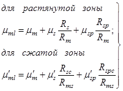
где 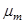 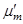
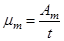 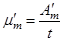
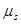 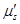
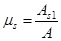 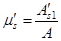
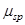 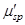
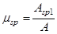 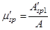
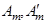
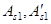
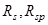
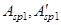
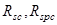
А - площадь поперечного сечения на данном участке;
t - толщина элемента на рассматриваемом участке сечения.
На участках сечения, где расстояние между арматурными стержнями свыше 10t, усилия в стержневой и проволочной арматуре должны учитываться для каждого стержня раздельно.
РАСЧЕТ ПО ПРОЧНОСТИ СЕЧЕНИЙ, НОРМАЛЬНЫХ К ПРОДОЛЬНОЙ ОСИ ЭЛЕМЕНТА
3.3. Предельные усилия в сечении, нормальном к продольной оси элемента, определяются исходя из следующих предпосылок (черт.2):
сопротивление бетона растяжению принимается равным нулю;
сопротивление бетона сжатию выражается напряжениями, равными Rb, равномерно распределенными по сжатой зоне бетона;
напряжения в арматуре, расположенной в сжатой зоне бетона, принимаются постоянными и не более Rmc, Rsc, Rpc;
растягивающие напряжения в арматуре принимаются постоянными по высоте растянутой зоны сечения и не более Rm, Rs, Rsp.
Черт. 2. Схема внутренних усилий и эпюра напряжений в сечении, нормальном к продольной оси элемента, при расчете по прочности
1 - сетки; 2 - стержневая или проволочная арматура, приведенная к равномерно распределенной по сечению элемента; 3 - сосредоточенная стержневая или проволочная арматура
3.4. Расчет сечений, нормальных к продольной оси элемента, когда внешняя сила действует в плоскости оси симметрии, должен производиться в зависимости от значения относительной высоты сжатой зоны бетона x = x/h, определяемого из условия равновесия и граничного значения относительной высоты сжатой зоны бетона xR, при котором предельное состояние элемента наступает одновременно с достижением в растянутых сетках и в стержневой или проволочной арматуре напряжений, равных расчетным сопротивлениям.
3.5. Значение xR определяется по формуле
xR = 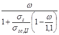
где - характеристика сжатой зоны бетона, определяемая для армоцементных конструкций из мелкозернистого бетона по формуле
= 0,7 - 0,008 Rb, (3)
Rb - принимается в МПа;
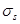 ); А-IV, A-V, A-VI, B-II, Bp-II,
К-7 и К-19 - (Rs + 400 -
); А-IV, A-V, A-VI, B-II, Bp-II,
К-7 и К-19 - (Rs + 400 -  - D
- D ); В-II,
Вр-II, К-7, К-19 -(Rs
+ 400 -
); В-II,
Вр-II, К-7, К-19 -(Rs
+ 400 -  );
);
Rs - расчетное сопротивление растяжению стержневой и проволочной арматуры с учетом соответствующих коэффициентов условий работы арматуры gsi принимается по СНиП 2.03.01-84;
 - определяется при коэффициенте gp < 1 согласно
указаниям СНиП 2.03.01-84.
- определяется при коэффициенте gp < 1 согласно
указаниям СНиП 2.03.01-84.
D 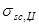 и
и
3.6. Для напрягаемой арматуры, имеющей сцепление с
бетоном и расположенной в зоне, сжатой от действия внешних усилий, расчетное
сопротивление арматуры сжатию Rsc должно быть заменено напряжением 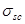
Изгибаемые элементы прямоугольного, таврового, двутаврового и кольцевого сечений
3.7. Расчет прямоугольных сечений с арматурой, приведенной к равномерно распределенной по сечению элемента (см. п. 3.2), когда внешняя сила действует в плоскости оси симметрии сечения (черт. 3) при x = x/h £ xR должен производиться из условия
М £ 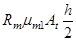
при этом высота сжатой зоны х определяется по формуле
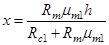
где Аt = (h - х) b,
Rc1 = Rb + 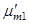
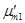
Черт. 3. Схема усилий и эпюра напряжений изгибаемых элементов прямоугольного сечения
а - при b > h; б - при b < h, 1 - сетки; 2 - стержневая или проволочная арматура, приведенная к равномерно распределенной по сечению элемента
3.8. Расчет прямоугольных сечений, в которых наряду с арматурой, приведенной к равномерно распределенной (см. п. 3.2), имеется стержневая и проволочная арматура, сосредоточенная у растянутой и сжатой граней сечения (черт. 4), при x = x/h £ xR должен производиться из условия
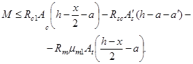
где A = xb,
при этом высота сжатой зоны бетона определяется по формуле
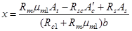
где
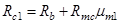
Аt = (h - x)b,
- принимается согласно п. 3.2.
Черт.4. Схема усилий и эпюра напряжений в изгибаемых элементах прямоугольного сечения с сосредоточенной стержневой и проволочной арматурой
1 - сетки; 2 - стержневая или проволочная арматура, приведенная к равномерно распределенной по сечению элемента; 3 - сосредоточенная стержневая или проволочная арматура
3.9. Расчет двутавровых сечений с арматурой, приведенной к равномерно распределенной (см. п. 3.2), имеющих полку в сжатой зоне, при x = x/h £ xR должен производиться в зависимости от положения границы сжатой зоны бетона:
а) если граница сжатой зоны проходит в полке (черт. 5), т.е. соблюдается условие
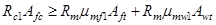
расчет должен производиться по формуле
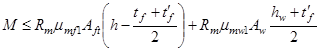
б) если граница сжатой зоны проходит в ребре (черт. 6), т.е. условие (9) не соблюдается, расчет выполняется по формуле
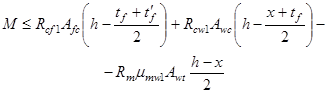
высота сжатой зоны х определяется из условия
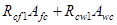 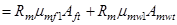
В формулах (9) - (12):
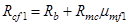
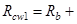 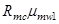
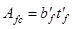
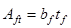
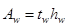
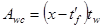
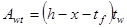
Коэффициенты приведенного армирования стенки , сжатой полки 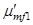 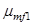
Черт. 5. Схема усилий и эпюра напряжений в изгибаемых элементах двутаврового сечения при х £ t¢f
1 - сетки; 2 - стержневая или проволочная арматура, приведенная к равномерно распределенной по сечению
Черт. 6. Схема усилий и эпюра напряжений в изгибаемых элементах двутаврового сечения при х > t¢f
1 - тонкие сетки; 2 - стержневая или проволочная арматура, приведенная к равномерно распределенной по сечению
3.10. Расчет тавровых сечений с полкой в сжатой зоне или приведенных к тавровым сечениям, в которых наряду с арматурой, приведенной к равномерно распределенной (см. п. 3.2), имеется стержневая или проволочная арматура в растянутой зоне, при x = x/h £ xR следует выполнять в зависимости от высоты сжатой зоны бетона:
а) если сжатая зона находится в пределах полки (черт. 7), т.е. соблюдается условие
прочность сечения определяется из условия
Черт. 7. Схема усилий и эпюра напряжений в изгибаемых элементах таврового сечения с полкой в сжатой зоне при х £ t¢f
1 - тонкие сетки; 2 - стержневая или проволочная арматура, приведенная к равномерно распределённой по сечению элемента; 3 - сосредоточенная стержневая или проволочная арматура
б) если граница сжатой зоны выходит за пределы полки (черт. 8), т.е. условие (13) не выполняется, прочность сечения определяется из условия
при этом высота сжатой зоны х определяется из условия
В формулах (13) - (16):
;
; ; ;
.
Коэффициенты приведенного армирования , и , принимаются согласно п. 3.2.
Черт.8. Схема усилий и эпюра напряжений в изгибаемых элементах таврового сечения с полкой в сжатой зоне при х > t¢f
1 - тонкие сетки; 2 - стержневая или проволочная арматура, приведенная к равномерно распределенной по сечению элемента; 3 - сосредоточенная стержневая или проволочная арматура
3.11. Ширина сжатой полки bf тавровых и двутавровых сечений, вводимая в расчет в соответствии с пп. 3.9 и 3.10, принимается из условия, что ширина свободного свеса в каждую сторону от ребра должна быть не более 1/6 пролета элемента и не более:
а) 1/2 расстояния в свету между продольными ребрами при наличии поперечных ребер;
б) tf - при отсутствии поперечных ребер или при расстоянии между ними большим, чем расстояние между продольными ребрами, при tf £ 0,1h;
в) 6tf при tf ³ 0,1h;
3tf при 0,05tf <tf < 0,1 h.
3.12. Расчет кольцевых сечений (черт. 9) должен производиться: а) при из условия
; (17)
, (18)
где , (19)
- радиус срединной поверхности стенки кольцевого элемента, равный
, (20)
- радиусы соответственно наружной и внутренней граней кольцевого сечения;
- коэффициент приведенного армирования кольцевого сечения, определяемый в соответствии с п. 3.2.
б) при из условия
; (21)
, (22)
, (23)
Черт. 9. Схема кольцевого сечения, принимаемая в расчете по прочности армоцементных элементов
3.13. При расчете по прочности изгибаемых элементов армоцементных конструкций рекомендуется соблюдать условие х £ xR h. В случае, когда площадь сечения растянутой арматуры по конструктивным соображениям или из расчета по предельным состояниям второй группы принята большей, чем это требуется для соблюдения условия х £ xR h, расчет следует производить по формулам (4), (7), (10), (11), (14), (15), принимая х = xR h.
Внецентренно сжатые элементы прямоугольного, таврового, двутаврового и кольцевого сечений
3.14. При расчете внецентренно сжатых элементов необходимо учитывать случайный начальный эксцентриситет согласно указаниям п. 1.16, а также влияние прогиба на их несущую способность в соответствии с требованиями СНиП 2.03.01-84.
3.15. Расчет внецентренно сжатых элементов прямоугольного сечения с арматурой, приведенной к равномерно распределенной (см. п. 3.2, черт. 4), следует выполнять:
а) при x = x/h £ xR из условия
при этом высота сжатой зоны х определяется по формуле
В формулах (24) и (25):
et - расстояние от точки приложения продольной силы до растянутой грани сечения;
Ас, Аt - площади сечений соответственно сжатой и растянутой зон сечения;
S¢b - статический момент площади сжатой зоны бетона относительно точки приложения продольной силы N;
S¢m1 - статический момент площади сжатой приведенной арматуры (см. п. 3.2) относительно той же точки;
Sm1 - статический момент площади растянутой приведенной арматуры относительно той же точки;
б) при x = x/h > xR из условия
Nc - несущая способность центрально-сжатого элемента, определяемого по формуле
, (27)
здесь ,
Nin - несущая способность сечения, в котором высота сжатой зоны бетона принимается равной х = xR h и определяется из выражения
, (28)
ec - эксцентриситет продольной силы относительно центра тяжести приведенного сечения, равный ec = M/N;
ein - эксцентриситет продольной расчетной силы Nin, определяемый по формуле
; (29)
;
.
3.16. Расчет внецентренно сжатых элементов таврового и двутаврового сечений с арматурой, приведенной к равномерно распределенной (см. п. 3.2), следует производить:
а) при x = x/h £ xR
если х £ tf (черт. 10) - из условия
высота сжатой зоны бетона определяется по формуле (25);
Черт. 10. Схема усилий и эпюра напряжений во внецентренно сжатых элементах двутаврового сечения при х £ t¢f
1 - тонкие сетки; 2 - стержневая или проволочная арматура, приведенная к равномерно распределенной по сечению элемента
Черт. 11. Схема усилий и эпюра напряжений во внецентренно сжатых элементах двутаврового сечения при х > t¢f
1 - тонкие сетки; 2 - стержневая или проволочная арматура, приведенная к равномерно распределенной по сечению элемента
если х > t¢f (черт. 11) - из условия
, (31)
где высота сжатой зоны х определяется по формуле (25);
б) при x = x/h > xR по формуле (26),
где , (32)
здесь ;
;
;
при х < t¢f
, (33)
при х > t¢f
; (35)
здесь ;
;
;
- расстояние от центра тяжести приведенного сечения до растянутой или менее сжатой грани;
при х > t¢f
;
здесь ;
. (36)
Влияние прогиба элемента учитывается путем умножения значения ес на коэффициент h, вычисляемый по СНиП 2.03.01-84.
В формулах (30) - (34) приняты обозначения такие же, как и в п. 3.9.
3.17. Расчет внецентренно сжатых элементов кольцевого сечения с арматурой, равномерно распределенной по длина окружности, должен производиться из условия
при этом величина относительной площади сжатой зоны бетона определяется по формуле
Если полученное из расчета по формуле (38) значение < 0,15, в условие (37) подставляется значение , определяемое по формуле
. (39)
В формуле (37)
.
Значение величины определяется с использованием рекомендаций п. 3.2.
Центрально-растянутые элементы
3.18. Расчет центрально-растянутых элементов прямоугольного сечения с арматурой, приведенной к равномерно распределенной (см. п. 3.2), следует производить из условия
. (40)
внецентренно растянутые элементы
3.19. Расчет внецентренно растянутых элементов прямоугольного сечения с арматурой, приведенной к равномерно распределенной (см. п. 3.2), следует выполнять:
а) если продольная сила N приложена в пределах ядра сечения (черт. 12) - из условия
где - коэффициент снижения несущей способности при внецентренном растяжении, принимаемый равным 0,8;
Черт. 12. Эпюра напряжений во внецентренно растянутых элементах прямоугольного сечения при приложении продольной силы N в пределах сечения
1 - сетки; 2 - стержневая или проволочная арматура
б) если продольная сила N приложена между ядром сечения и наружной гранью сечения из условия (41), где принимается равным 0,6;
в) если продольная сила N приложена за пределами сечения (черт. 13) - из условия
при этом высота сжатой зоны х определяется по формуле
S¢b, S¢m1, Sm1 - обозначения те же, что и в формуле (25).
Если полученное из расчета по формуле (43) значение х > xR h, то в условие (42) подставляется значение х = xR h.
Черт.13. Эпюра напряжений во внецентренно растянутых элементах прямоугольного сечения при приложении продольной силы N за пределами сечения
1 - сетки; 2 - стержневая или проволочная арматура
расчет по прочности сечений, НАКЛОННЫХ К ПРОДОЛЬНОЙ ОСИ ЭЛЕМЕНТА
3.20. Расчет по прочности наклонных сечений должен производиться:
по сжатому бетону между наклонными трещинами;
по наклонной трещине на действие поперечной силы;
по наклонной трещине на действие изгибающего момента.
3.21. Для армоцементных элементов прямоугольного сечения должно соблюдаться условие, обеспечивающее прочность по сжатому бетону между наклонными трещинами
Q. (44)
Коэффициент , учитывающий влияние поперечных проволок сеток, определяется по формуле
, (45)
Коэффициент определяется по формуле
, (46)
где значение принимается в МПа.
3.22. Расчет по прочности сечений, наклонных к продольной оси армоцементного элемента, на поперечную силу (черт. 14) должен производиться из условия
Q £ Qm + Qb, (47)
где Q - поперечная сила, определяется внешней нагрузкой, расположенной по одну сторону от рассматриваемого наклонного сечения;
Qm - поперечная сила, воспринимаемая поперечными проволоками сетки, пересекающими наклонную трещину;
Qb - поперечная сила, воспринимаемая бетоном сжатой зоны в наклонном сечении.
Значения Qm, определяются по формуле
Qm = qmwaq, (48)
где aq - проекция наклонной трещины; угол наклона трещины принимается равным 45°;
qmw - интенсивность армирования элемента поперечными проволоками сеток в пределах наклонной трещины:
qmw = ; (49)
здесь - коэффициент приведенного армирования стенки при расчете на поперечную силу, определяемый по формуле
= ; (50)
- площадь сечения поперечных проволок сеток, расположенных в пределах наклонной трещины;
- площадь сечения поперечных стержней, расположенных в пределах наклонных трещин;
- толщина стенки, воспринимающей поперечную силу;
- угол наклона стенки складчатого элемента к вертикальной оси сечения элемента.
Значение поперечной силы Qb для изгибаемых и внецентренно сжатых элементов определяется по формуле
Qb = ; (51)
tw и h - соответственно ширина и высота элемента в рассчитываемом сечении.
В случае, когда граница сжатой зоны располагается в пределах полки, допускается принимать .
Черт. 14. Схема усилий в сечении, наклонном к продольной оси, при расчете по прочности на действие поперечной силы
3.23. Расчет сечений, наклонных к продольной оси элемента, на действие изгибающего момента должен производиться из условия
, (52)
где M - момент всех внешних сил, расположенных по одну сторону от рассматриваемого наклонного сечения относительно оси, проходящей через точку приложения равнодействующей усилий в сжатой зоне и перпендикулярной плоскости действия момента.
Высота сжатой зоны в наклонном сечении, измеренная по нормали к продольной оси элемента, определяется из условия равновесия проекций усилий в бетоне и арматуре наклонного сечения на продольную ось элемента. Проверка на действие изгибающего момента не производится для наклонных сечений, пересекающих растянутую грань элемента на участках, где не образуются нормальные трещины, т.е. там, где момент М от внешней нагрузки, на которую ведется расчет по прочности, меньше или равен моменту трещинообразования Mcrc, определяемому по СНиП 2.03.01-84, в котором значение Rbt, ser заменяется значением Rbt.
4. РАСЧЕТ АРМОЦЕМЕНТНЫХ КОНСТРУКЦИЙ ПО ПРЕДЕЛЬНЫМ СОСТОЯНИЯМ ВТОРОЙ ГРУППЫ
РАСЧЕТ ПО ОБРАЗОВАНИЮ И РАСКРЫТИЮ ТРЕЩИН
4.1. Расчет элементов армоцементных конструкций по образованию трещин, нормальных и наклонных к продольной оси элемента, следует производить в соответствии с требованиями СНиП 2.03.01-84 как для железобетонных конструкций из мелкозернистого бетона соответствующего класса. При этом значение момента сопротивления с учетом трещин Wpl следует определять по п. 4.13, а Rbt, ser принимать без учета коэффициента условий работы бетона gb.
4.2. Элементы армоцементных конструкций следует рассчитывать по раскрытию трещин:
нормальных к продольной оси элемента;
наклонных к продольной оси элемента.
Расчет по раскрытию трещин, нормальных к продольной оси элемента
4.3. Ширину раскрытия трещин acrc, нормальных к продольной оси элемента, при сетчатом армировании следует определять по формуле
acrc, (53)
где - коэффициент, принимаемый равным при сетках: сварных - 3; тканых - 3,5;
- коэффициент, принимаемый разным при учете:
кратковременных и непродолжительного действия постоянных и длительных нагрузок - 1;
многократно повторяющихся, а также продолжительного действия постоянных и длительных нагрузок для бетона групп: А-1,5; Б-1,7; В-1,65;
- напряжение в сетках у растянутой грани сечения от действия нагрузки, определяется согласно п. 4.5;
- модуль упругости сетки, принимаемый согласно п. 2.22;
- размер ячейки сетки, мм.
4.4. Ширину раскрытия трещин acrc, мм, нормальных к продольной оси элемента, при комбинированном армировании следует определять по формуле
acrc , (54)
где - коэффициент, принимаемый равным для изгибаемых и внецентренно сжатых элементов - 1, растянутых - 1,2;
- то же обозначение, что и в п. 4.3;
- коэффициент, зависящий от величины коэффициента приведенного сетчатого армирования растянутой зоны элемента и принимаемый при:
0,4 % < < 1 % - 4,5;
1 % £ < 2 % - 3,0;
> 2 % - 1,5;
- коэффициент, принимаемый равным при сетках:
сварных - 0,8;
тканых - 1;
- принимается согласно п. 4.5;
- коэффициент приведенного армирования растянутой зоны (см. п. 3.2), принимаемый не более 0,02;
ds - диаметр стержневой или проволочной арматуры, мм;
Em1 - приведенный модуль упругости арматуры, определяемый по формуле
. (55)
4.5. Напряжение , следует определять:
a) в центрально-растянутых элементах по формуле
, (56)
где Р - усилие предварительного напряжения с учетом всех потерь;
Ab - площадь сечения бетона;
б) для изгибаемых, внецентренно сжатых или внецентренно растянутых элементов - по правилам строительной механики как для упругого тела.
В расчете  должно рассматриваться сечение,
приведенное к эквивалентному стальному сечению (черт. 15), с единой упругой
характеристикой; в растянутой зоне к стальному сечению приводится только
арматура с эквивалентной площадью сечения, а в сжатой зоне - арматура и бетон с
эквивалентными площадями сечения (бетон - с учетом соотношения модулей
упругости).
должно рассматриваться сечение,
приведенное к эквивалентному стальному сечению (черт. 15), с единой упругой
характеристикой; в растянутой зоне к стальному сечению приводится только
арматура с эквивалентной площадью сечения, а в сжатой зоне - арматура и бетон с
эквивалентными площадями сечения (бетон - с учетом соотношения модулей
упругости).
Черт. 15. Схема приведения сечения армоцементных элементов к стальному
а - сечение армоцементного элемента; б - сечение, приведенное к стальному
Значение  , определяется:
, определяется:
для изгибаемых элементов по формуле
для внецентренно сжатых и внецентренно растянутых элементов по формуле
В формулах (57) - (58):
Ws1 - момент сопротивления приведенного к стальному сечению, определяется по формуле
; (59)
где Is1 - момент инерции сечения, приведенного к эквивалентному стальному сечению, относительно его центра тяжести;
Ntot - равнодействующая продольной сипы N и усилия предварительного обжатия Р;
ecp - эксцентриситет приложения силы Р относительно центра тяжести сечения элемента;
ec,tot - эксцентриситет усилия Ntot относительно центра тяжести сечения;
r - расстояние от ядровой точки, ближайшей к сжатой грани сечения.
В формуле (58) знак «минус» принимается при внецентренном сжатии, а знак «плюс» - при внецентренном растяжении.
4.6. Для элементов, к трещиностойкости которых предъявляются требования 2-й категории, ширина непродолжительного раскрытия трещин определяется как сумма ширины раскрытия от продолжительного действия постоянных и длительных нагрузок и приращения ширины раскрытия от действия кратковременной нагрузки. Ширина продолжительного раскрытия трещин зависит от продолжительности действия постоянных и длительных нагрузок.
Расчет по раскрытию трещин, наклонных к продольной оси элемента
4.7. Ширина раскрытия трещин, наклонных к продольной оси изгибаемых элементов, при сетчатом и комбинированном армировании определяется по формуле
acrc , (60)
где - коэффициент тот же, что и в п. 4.3;
k1 - коэффициент, принимаемый при сетках:
тканых - 103 (30 - 1500 ),
сварных - 103 (20 - 1200);
- коэффициент тот же, что и в п. 4.4;
- принимается согласно указаниям п.3.2;
dm - диаметр проволок сеток, расположенных по нормали к продольной оси элемента;
, (61)
здесь Q - наибольшая поперечная сила на рассматриваемом участке длины элемента от действующей нагрузки.
РАСЧЕТ ЭЛЕМЕНТОВ АРМОЦЕМЕНТНЫХ КОНСТРУКЦИЙ ПО ДЕФОРМАЦИЯМ
4.8. Деформации (прогибы, углы поворота) элементов армоцементных конструкций должны вычисляться по формулам строительной механики с определением входящих в них значений жесткости и кривизны в соответствии с пп. 4.9. - 4.15.
Значения кривизны и деформации армоцементных элементов отсчитываются от их начального состояния; при наличии предварительного напряжения арматуры - от состояния до обжатия элемента.
Элементы или части элементов рассматриваются без трещин в растянутой зоне, если трещины не образуются при действии постоянных, длительных и кратковременных нагрузок, нагрузки вводятся в расчет с коэффициентом надежности по нагрузке = 1.
4.9. Жесткость элементов при кратковременном действии нагрузки определяется по формуле
где - модуль упругости бетона, принимаемый по указаниям СНиП 2.03.01-84;
- момент инерции армированного сечения, приведенного к бетонному, с учетом коэффициентов сетчатого армирования в соответствии с соотношением модулей Es/Ет.
Приведенные коэффициенты армирования для расчета деформаций определяются по формулам:
(63)
Определение кривизны на участках без трещин в растянутой зоне
4.10. Полное значение кривизны изгибаемых, внецентренно сжатых и внецентренно растянутых элементов на участках, где не образуются нормальные или наклонные к продольной оси элемента трещины, должна определяться по формуле
rtot = r1 + r2 - r3 - r4, (64)
где r1, r2 - кривизны соответственно от кратковременных нагрузок (принимаемых согласно указаниям СНиП 2.03.01-84) и от постоянных и длительных временных нагрузок (без учета усилия Р), определяемые по формулам:
r1, (65)
r2, (66)
здесь М - момент от соответствующей внешней нагрузки относительно оси, нормальной к плоскости действия момента и проходящей через центр тяжести приведенного сечения;
- определяется по формуле (62);
- коэффициент, учитывающий влияние ползучести бетона и принимаемый равным:
при влажности воздуха окружающей среды 40% и выше - 2,6; для бетона, изготовленного с пропаркой - 3; при влажности воздуха окружающей среды ниже 40% - 3,9; для бетона, изготовленного с пропаркой - 4,5;
- жесткость армоцементных конструкций при учете продолжительного действия нагрузки, принимаемая равной
; (67)
r3 - кривизна, обусловленная выгибом элемента от непродолжительного действия усилия предварительного обжатия и определяемая по формуле
r3; (68)
r4 - кривизна, обусловленная выгибом элемента вследствие усадки и ползучести бетона от усилия предварительного обжатия и определяемая по формуле
r4 = (69)
здесь - относительные деформации бетона, вызванные его усадкой и ползучестью под действием усилия предварительного обжатия, определяемые соответственно на уровне растянутой и сжатой грани сечения по формулам:
(70)
(71)
Значение  принимается численно равным сумме потерь
предварительного напряжения арматуры от усадки и ползучести бетона по указаниям
СНиП
2.03.01-84 - для арматуры растянутой зоны, а - то же, для напрягаемой
арматуры, если бы она имелась на уровне крайнего сжатого волокна бетона.
принимается численно равным сумме потерь
предварительного напряжения арматуры от усадки и ползучести бетона по указаниям
СНиП
2.03.01-84 - для арматуры растянутой зоны, а - то же, для напрягаемой
арматуры, если бы она имелась на уровне крайнего сжатого волокна бетона.
Значения кривизны r3 и r4 для элементов без предварительного напряжения допускается принимать равными нулю.
4.11. При определении кривизны на участках с начальными трещинами в сжатой зоне бетона (см. п. 1.21) r1, r2, r3 должны быть увеличены на 15 %, а r4 - на 25 %.
Определение кривизны на участках с трещинами в растянутой зоне
4.12. Полное значение кривизны изгибаемых, внецентренно сжатых и внецентренно растянутых элементов прямоугольного, таврового и двутавровых сечений на участках, где образуются нормальные к продольной оси элемента трещины, следует определять по формуле.
rtot = r5 - r6 + r1 - r4, (72)
где r5 - кривизна от непродолжительного действия всей нагрузки, на которую производится расчет по деформациям согласно указаниям п. 1.16;
r6 - кривизна от непродолжительного действия постоянных и длительных нагрузок;
r1 - кривизна от продолжительного действия постоянной и длительной нагрузок;
r4 - кривизна, обусловленная выгибом элемента вследствие усадки и ползучести бетона от усилия предварительного обжатия и определяемая по формуле (69).
4.13. Значение r5 определяется по формуле
r5 , (73)
М - момент от всей внешней нагрузки относительно оси, нормальной к плоскости действия момента и проходящей через центр тяжести приведенного сечения;
Mcrc - момент, воспринимаемый сечением, нормальным к продольной оси элемента, при образовании трещин;
- определяется по формуле (62);
- определяется по формуле
здесь k - коэффициент, учитывающий снижение жесткости элемента и принимаемый по табл. 6.
Таблица 6
|
Коэффициент армирования , % |
Коэффициент k для элементов |
||
|
изгибаемых и растянутых |
внецентренно сжатых |
||
|
Сетчатое при сетках: |
|||
|
тканых |
До 1,5 От 1,5 до 3 |
0,08 0,16 |
0,16 0,32 |
|
сварных |
До 1,5 От 1,5 до 3 |
0,1 0,2 |
0,2 0,4 |
|
Комбинированное при сетках: |
|||
|
тканых |
До 1,5 |
0,08 |
0,16 |
|
сварных |
До 1,5 |
0,1 |
0,2 |
|
тканых |
От 1,5 до 3 |
0,1 |
0,22 |
|
сварных |
От 1,5 до 3 |
0,12 |
0,25 |
Значение Mcrc определяется по формулам:
для элементов без предварительного напряжения арматуры
Mcrc (75)
для предварительно напряженных элементов
Mcrc (76)
где - момент сопротивления для крайнего растянутого волокна сечения с учетом неупругих деформаций растянутого бетона, определяется по формуле
(77)
где , , - моменты инерции сжатой и растянутой зон сечения, вычисленные относительно нулевой линии площадей сечения сеток, расположенных в этой зоне сечения;
St - статический момент относительно той же линии бетона растянутой части сечения;
H - x - расстояние от нулевой линии до крайнего растянутого волокна сечения.
Положение нулевой линии сечения определяется из условия
(78)
где , , - статические моменты, вычисленные относительно нулевой линии, соответственно сжатой зоны сечения бетона, площади сеток, расположенных в этой зоне сечения, и площади сеток, расположенных в растянутой зоне сечения;
h - высота сечения.
Значение Мр в зависимости (76) определяется по формуле
в формуле (76) знак «плюс» следует принимать, когда направления моментов М и Мр противоположны, знак «минус» - когда направления совпадают. В формуле (79):
Мр - момент усилия Nр относительно оси, параллельной нулевой линии и проходящей через ядровую точку, наиболее удаленную от растянутой зоны, трещиностойкость которой нужно определить; значение Мр определяется по указаниям СНиП 2.03.01-84, принимая согласно п. 4.13.
4.14. Значение определяется по формуле
(80)
где - момент от постоянных и длительных нагрузок относительно оси, нормальной к плоскости действия момента и проходящей через центр тяжести приведенного сечения;
- определяется по формуле (74).
4.15. Значение определяется по формуле
(81)
где - см. п. 4.14;
- определяется по формуле
(82)
здесь - принимается по формуле (74).
Определение прогибов
4.16. Прогиб, обусловленный деформацией изгиба, определяется по формуле
, (83)
где - изгибающий момент в сечении х от действия единичной силы, приложенной по направлению искомого перемещения элемента в сечении х по длине пролета, для которого определяется прогиб;
- полная величина кривизны элемента в сечении х от нагрузки, при которой определяется прогиб; величина определяется по формулам (64) и (72); знак принимается в соответствии с эпюрой кривизны.
Для элементов постоянного сечения, имеющих трещины на каждом участке, в пределах которого изгибающий момент не меняет знака, кривизну допускается вычислять для наиболее напряженного сечения, принимая кривизну для остальных сечений такого участка изменяющейся пропорционально значениям изгибающего момента.
Для некоторых наиболее распространенных случаев загружения прогиб изгибаемого элемента постоянного сечения может определяться по формуле
(84)
где m - коэффициент, принимаемый в зависимости от условий опирания и схемы загружения;
- кривизна в сечении с наибольшим изгибающим моментом от нагрузки, при которой определяется прогиб;
- расчетный пролет элемента.
5. КОНСТРУКТИВНЫЕ ТРЕБОВАНИЯ
5.1. При проектировании армоцементных конструкций для обеспечения условий их изготовления и требуемой долговечности, совместной работы бетона и арматуры надлежит выполнять конструктивные требования, изложенные в настоящем разделе.
МИНИМАЛЬНЫЕ РАЗМЕРЫ СЕЧЕНИЙ ЭЛЕМЕНТОВ
5.2. Минимальные размеры сечений элементов армоцементных конструкций, определяемые из расчета на действующие усилия по предельным состояниям первой и второй групп, следует назначать с учетом требований к толщине защитного слоя бетона, расположения и анкеровки арматуры, унификации размеров сечений и армирования, а также технологии изготовления конструкций.
5.3. Толщину полок и стенок несущих армоцементных конструкций следует принимать не менее 15 мм и не более 30 мм. Контурные ребра, ребра жесткости, диафрагмы в случае, если это требуется по расчету, могут выполняться толщиной свыше 30мм.
Утолщения свыше 40 мм (контурные ребра, ребра жесткости, диафрагмы и т.п.) допускается выполнять без сеток в соответствии с указаниями СНиП 2.03.01-84 для железобетонных конструкций.
Примечание. В пределах участка конструкций, где отсутствует сетчатое армирование, требования в части толщины защитного слоя и ширины раскрытия трещин принимаются как для железобетонных конструкций.
ЗАЩИТНЫЙ СЛОЙ БЕТОНА
Проектная толщина защитного слоя бетона в армоцементных конструкциях должна быть не менее:
для сетки - 4 мм;
для стержневой и проволочной арматуры при наличии сеток в пределах защитного слоя бетона - 8 мм.
Толщину защитного слоя бетона следует принимать с учетом требований по технологии изготовления конструкций.
5.5. Для армоцементных конструкций без гидроизоляционного покрытия толщина защитного слоя бетона для напрягаемой арматуры в пределах длины зоны передачи напряжении Ip (см. СНиП 2.03.01-84) должна приниматься не менее двух диаметров арматуры, но не более 15 мм.
5.6. Во всех сборных изгибаемых элементах концы продольных стержней ненапрягаемой арматуры должны отстоять от торца элемента не более чем на 5 мм.
Концы напрягаемой арматуры, а также анкеры необходимо защищать слоем мелкозернистого бетона не менее 5 мм.
5.7. При проектировании необходимо предусматривать меры по обеспечению проектного положения сеток, стержневой и проволочной арматуры в сечении элемента (установкой прокладок и подкладок, шайб из бетона и т.п.). При невозможности выполнения этих требований следует применять оцинкованную арматуру и сетки.
АРМИРОВАНИЕ ЭЛЕМЕНТОВ
5.8. В элементах армоцементных конструкций сетки следует располагать на минимальном (в соответствии с п. 5.4) расстоянии от поверхности элементов для восприятия температурно-усадочных напряжении. Для восприятия растяжения, возникающего в зоне самозаанкеривания стержневой и проволочной арматуры, частые сетки рекомендуется располагать на минимальном расстоянии от поверхности этой арматуры.
5.9. В пределах полки или стенки элементов армоцементных конструкций должно располагаться не менее двух сеток симметрично относительно срединной поверхности.
Изгибаемые элементы прямоугольного сечения допускается армировать в растянутой зоне одной или несколькими сетками.
Армоцементные элементы с конструктивным армированием допускается армировать одной сеткой, расположенной в средней части сечения элемента.
Примечание. В армоцементных элементах на толщине в 1 см применять более четырех сеток не допускается.
5.10. Отдельные стержни ненапрягаемой или напрягаемой арматуры в стенках и полках элементов армоцементных конструкций должны располагаться, как правило, равномерно по сечению, предусматривая установку большого количества стержней меньшего диаметра при минимальных расстояниях между ними не менее 10 мм.
Арматуру следует предусматривать так, чтобы при том же расходе металла количество классов и диаметров арматуры было минимальным.
Арматура должна допускать укладку ее в форму в соответствии с принятой технологией:
готовыми пакетами до укладки бетона;
отдельными сетками в процессе формования.
5.11. Отверстия в армоцементных конструкциях следует окаймлять дополнительной арматурой, сечение которой должно быть не менее сечения рабочей арматуры в пределах отверстия, требуемой по расчету плиты как сплошной. При конструктивном армировании плиты и небольших размерах отверстий край плиты армируется исходя из конструктивных требований.
При наличии сосредоточенных нагрузок по краям плиты армирование и утолщение должны выполняться по расчету.
Особенности армирования внецентренно сжатых элементов
5.13. Коэффициент сетчатого армирования внецентренно сжатых элементов в направлении действия усилия сжатия должен, как правило, составлять не более 1,5 %.
5.14. Стержневую и проволочную арматуру во внецентренно сжатых элементах следует предусматривать диаметром не более 1/2 толщины полки или стенки и не болев 8 мм.
В перегибе сеток рекомендуется установка стержня.
5.15. Сетки в сжатых элементах следует располагать в крайнем возможном положении относительно центра тяжести сечения с целью повышения жесткости элемента.
Особенности армирования изгибаемых элементов
5.16. В изгибаемых элементах таврового, двутаврового сечений (или приводимого к ним сечения) с полкой в растянутой зоне продольная стержневая или проволочная арматура должна располагаться в растянутой зоне сечения симметрично относительно вертикальной оси элемента.
5.17. Поперечное армирование элементов, как правило, выполняется сетками с квадратными ячейками.
5.18. Анкеровку поперечной арматуры в полках изгибаемых элементов следует выполнять согласно требованиям п. 5.12.
5.19. Армирование цилиндрических, складчатых и коробчатых элементов следует предусматривать неразрезными сетками с их перегибом по линии примыкания граней.
5.20. Диаметр стержневой и проволочной арматуры изгибаемых элементов должен предусматриваться с учетом возможности расположения арматуры в тонкостенном сечении или утолщениях.
Стержневую и проволочную арматуру диаметром 8 мм и более, а также канаты диаметром свыше 6 мм допускается предусматривать только в ребрах элемента.
МИНИМАЛЬНОЕ РАССТОЯНИЕ МЕЖДУ СТЕРЖНЯМИ АРМАТУРЫ
5.21. Расстояние между напрягаемой арматурой должно быть не менее 3ds, где ds - диаметр стержня (каната).
5.22. Расстояние между отдельными стержнями арматурных сеток, выполняющих также роль фиксатора проектного положения сетчатого армирования, следует назначать на более 15 см.
5.23. Армоцементные конструкции следует проектировать с арматурой, имеющей сцепление с бетоном по всей длине элемента. В случае необходимости, например для сокращения зоны анкеровки, допускается устройство анкеров.
5.24. На свободных опорах плоских изгибаемых элементов для обеспечения анкеровки сеток, доходящих до опоры, следует выполнять следующие требования (черт. 16):
Черт. 16. Схема свободного опирания плоских нагибаемых элементов
длина опорного участка плиты должна быть не менее 3t и не менее 40 мм (где t - толщина плиты);
длина запуска арматуры за грань опоры должна быть не менее 20 dm для сварных сеток и 30 dm - для тканых сеток; при комбинированном армировании - 15 ds.
Примечание. Участок сетки, заходящий за грань свободной опоры, должен иметь не менее двух поперечных анкерующих стержней.
5.25. Продольные стержни растянутой и сжатой арматуры должны быть заведены за нормальное к оси элемента сечение, в котором эти стержни учитываются с полным расчетным сопротивлением, на длину не менее lp определяемую в соответствии с указаниями СНиП 2.03.01-84.
5.26. При невозможности выполнения требований п. 5.25 необходимо предусмотреть меры по анкеровке продольных стержней для обеспечения их работы с полным расчетным сопротивлением в рассматриваемом сечении:
а) приварка к концам стержней анкерующих пластин или закладных деталей (черт. 17);
б) отгиб анкерных стержней по дуге окружности диаметром 10d, при этом длина прямого участка у начала зоны анкеровки должна быть не менее 5d, а на отогнутом участке стержня должна быть уложена дополнительная сетка.
Черт.17. Приварка к концам стержней анкерующих пластин или закладных деталей
1 - пластина (рифленая в местах контактной сварки); 2 - рабочие стержни ненапрягаемой арматуры; 3 - место точечной электросварки; 4 - сетки
5.27. Продольные растянутые сетки должны быть заведены за нормальное к оси элемента сечение, в котором они необходимы по расчету, на длину не менее 20 dm для сварных и не менее 30 dm - для тканых сеток.
СТЫКИ СЕТЧАТОЙ И СТЕРЖНЕВОЙ АРМАТУРЫ
5.28. Стыки сеток допускается осуществлять внахлестку, причем стыки в растянутой зоне изгибаемых или внецентренно сжатых элементов рекомендуется располагать в местах неполного использования сечения арматуры.
5.29. Стыки растянутых сеток в рабочем направлении, выполняемые внахлестку, должны иметь длину перепуска (нахлестки) в тканых сетках - не менее 100 мм, в сварных - не менее 60 мм, а стыки сжатых сеток - соответственно 50 и 30 мм (черт. 18). Стыки растянутых сеток элемента должны располагаться вразбежку. Сечение состыкованных сеток в одном месте или по длине нахлестки должно составлять на более 50 % общего сечения растянутых сеток.
Черт. 18. Стыки сеток, выполняемые внахлестку
а - стыки растянутых тканых сеток в рабочем направлении; б - то же, конструктивные стыки; в - стыки растянутых сварных сеток в рабочем направлении; г - то же, конструктивные стыки
В местах соединения сеток в рабочем направлении в каждой из стыкуемых сеток по длине нахлестки должно располагаться для сеток: сварных - не менее четырех поперечных проволок, приваренных ко всем продольным стержням сетки; тканых - не менее шести поперечных проволок.
5.30. Стыкование внахлестку стержневой и проволочной арматуры, которая используется с полным расчетным сопротивлением, в тонкостенных армоцементных элементах не допускается.
5.31. Во внецентренно сжатых элементах сетки рекомендуется соединять в поперечном направлении между собой скрутками, сжимами или другими способами.
ЗАКЛАДНЫЕ ДЕТАЛИ
5.32. Закладные детали следует изготовлять из рифленых штампованных пластин толщиной не менее 5 мм с приваркой их контактной электросваркой к арматурным изделиям, а также к анкерным стержням диаметром 3-6 мм (см. черт. 17).
5.33. Стальные закладные детали должны быть защищены от коррозии в соответствии с требованиями СНиП 2.03.01-84.
СТЫКИ СБОРНЫХ ЭЛЕМЕНТОВ
5.34. Конструкция стыков сборных элементов, работающих на изгиб, внецентренное сжатие или растяжение, должна обеспечивать восприятие расчетных усилий с учетом возможных монтажных эксцентриситетов.
В тех случаях, когда передача усилий в стыках осуществляется через закладные детали, анкерные стержни закладных деталей должны быть равнопрочными с прерываемой в стыке стержневой и проволочной арматурой и сетками соединяемых элементов.
Стыки сборных элементов рекомендуется предусматривать одним из следующих способов:
а) установкой диафрагм около торцов элементов и сваркой стальных закладных деталей накладными пластинками, пропускаемыми через отверстия в диафрагмах, с последующим замоноличиванием стыка;
б) устройством контурных ребер, дуговой сваркой выпусков стержневой и проволочной арматуры и дуговой сваркой закладных деталей стыкуемых элементов и ребер (черт. 19, а) с последующим замоноличиванием стыка;
Черт.19. Стыки складчатых сборных армоцементных конструкций, работающих на внецентренное сжатие и поперечную силу
а - стык, выполняемый с контурной диафрагмой сваркой стальных деталей и выпусков арматуры с последующим замоноличиванием; б - стык, выполняемый с натяжением арматуры; 1 - складчатый элемент; 2 - диафрагма; 3 - стальные накладные пластины; 4 - закладные детали; 5 - контурная диафрагма; 6 - выпуски арматуры; 7 - бетон замоноличивания; 8 - стыковая напрягаемая арматура; 9 - продольная напрягаемая арматура; 10 - анкер на стыковом стержне; 11 - анкерная колодка
в) соединением элементов с помощью преднапряженных стержней (черт. 19, б) с замоноличиванием шва для предварительно напряженных конструкций, а также стыкуемых насухо или с промазкой торцов стыкуемых элементов эпоксидным компаундом;
г) с применением сквозной стержневой и проволочной арматуры, в том числе напрягаемой, в сборно-монолитных конструкциях.
6.35. Замоноличивание стыков сборных элементов следует выполнять, как правило, путем заполнения шва между элементами мелкозернистым бетоном, причем ширина шва должна быть не более 1,5 t и не менее 0,5 см. Допускается применение полимербетонов для замоноличивания швов шириной менее 1 см.
ДОПОЛНИТЕЛЬНЫЕ УКАЗАНИЯ ПО КОНСТРУИРОВАНИЮ ПРЕДВАРИТЕЛЬНО НАПРЯЖЕННЫХ ЭЛЕМЕНТОВ
5.36. В предварительно напряженных элементах сетчатое армирование в пределах обжатой зоны должно быть минимальным, но не менее двух сеток. Сетки должны располагаться симметрично относительно напрягаемой арматуры.
Черт. 20. Схема анкеровки напрягаемой арматуры
а - напрягаемая арматура, заанкеренная на упорах формы; б - элемент после отпуска предварительного напряжения арматуры; 1 - высаженная головка на конце проволоки; 2 - анкерная шайба с прорезью; 3 - неподвижный анкерный упор; 4 - промежуточная высаженная головка; 5 - проволока; 6 - предварительно напряженный элемент; 7 - основные сетки; 8 - дополнительные сетки
5.37. У конца предварительно напряженных элементов в пределах зоны анкеровки напрягаемой арматуры на участке длиной не менее 50 ds (где ds - наибольший диаметр напрягаемой арматуры) вне зависимости от способа анкеровки следует устанавливать не менее двух дополнительных сеток симметрично относительно этой арматуры (см. п. 5.8).
5.38. Анкеровка напрягаемой арматуры должна осуществляться с помощью специальных анкерных шайб из стали марки 10Г2С1 и высаженных головок стержневой и проволочной арматуры (черт. 20). Допускается не применять анкерные устройства на концах напрягаемых стержневой и проволочной арматуры периодического профиля, если проектная марка и передаточная прочность бетона более значений, установленных СНиП 2.03.01-84 и толщина защитного слоя бетона напрягаемой арматуры соответствует требованиям пп. 5.4 - 5.5.
ПРИЛОЖЕНИЕ 1
Справочное
ОСНОВНЫЕ БУКВЕННЫЕ ОБОЗНАЧЕНИЯ
Усилия от внешних нагрузок и воздействий в поперечном сечении элемента и от предварительного напряжения
М - изгибающий момент;
N - продольная сила;
Q - поперечная сила;
Р - усилие предварительного обжатия.
Характеристики материалов
- расчетные сопротивления мелкозернистого бетона сжатию соответственно для предельных состояний первой и второй групп:
- расчетные сопротивления мелкозернистого бетона растяжению соответственно для предельных состоянии первой и второй групп;
- расчетные сопротивления проволочной и стержневой ненапряженной и напряженной арматуры;
- расчетное приведенное сопротивление бетона сжатой зоны сечения;
- расчетное сопротивление сеток растяжению для предельных состояний первой группы;
- расчетное сопротивление сеток растяжению при расчете сечений на поперечную силу в наклонных сечениях;
- расчетное сопротивление сеток сжатию;
Еb - начальный модуль упругости мелкозернистого бетона при сжатии и растяжении;
Еm - модуль упругости сеток;
a - отношение модулей упругости сетчатой арматуры Еm и бетона Еb;
Еs - модуль упругости стержневой и проволочной арматуры.
Геометрические характеристики
Ab - площадь сечения бетона;
- площади сечения проволок сетки в сжатой и растянутой зонах;
- площади сечения бетона сжатой и растянутой зон соответственно;
- площади сечения ненапрягаемой стержневой арматуры на единицу ширины соответственно в сжатой и растянутой зонах;
- площади напрягаемой стержневой арматуры на единицу ширины соответственно в сжатой и растянутой зоне;
- коэффициент сетчатого армирования, определяемый как отношение площади сечения арматуры Аm к площади сечения бетона Ab;
, , , - коэффициенты армирования стержневой и проволочной сжатой, растянутой арматурой соответственно ненапрягаемой и напрягаемой;
, - коэффициенты армирования, приведенные к сетчатому, соответственно для растянутой и сжатой зоны;
tf, tf - толщина соответственно сжатой и растянутой полок двутаврового сечения;
b - ширина сечения;
bfc, bf - ширина соответственно сжатой и растянутой полок двутаврового сечения;
h - высота прямоугольного, таврового или двутаврового сечений;
a¢, a - расстояния от равнодействующей сосредоточенной сжатой A¢s, A¢sp и растянутой сжатой As, Asp арматуры до ближайшей грани сечения;
x - высота сжатой зоны бетона;
x - относительная высота сжатой зоны бетона, равная x = x/h;
ec - эксцентриситет продольной силы N относительно центра тяжести приведенного сечения;
l1 - расчетная длина армоцементного элемента, подвергающегося действию сжимающей продольной силы;
dm - диаметр проволок сварных, тканых и плетеных сеток;
l - пролет элемента;
r - радиус инерции поперечного сечения элемента относительно центра тяжести сечения;
ds - номинальный диаметр стержневой арматуры;
I1 - момент инерции сечения, приведенного к бетонному, относительно его центра тяжести;
Is1 - момент инерции сечения, приведенного к стальному, относительно его центра тяжести;
Ws1 - момент сопротивления растянутого волокна, приведенного к стальному;
Bf1 - жесткость сечения элемента армоцементных конструкций при кратковременном действии нагрузки;
Bf2 - жесткость сечения элемента армоцементных конструкций при действии нагрузок на участке, в пределах которого образуются трещины;
B¢f2 - жесткость сечения элемента армоцементных конструкций при действии эксплуатационной нагрузки;
yc - расстояние до центра тяжести.
ПРИЛОЖЕНИЕ 2
Справочное
РЕКОМЕНДУЕМЫЙ СОРТАМЕНТ ТКАНЫХ И СВАРНЫХ ПРОВОЛОЧНЫХ СЕТОК ДЛЯ АРМОЦЕМЕНТНЫХ КОНСТРУКЦИЙ
|
Вид сеток |
№ сетки |
Номинальный диаметр проволоки сетки, мм |
Размер ячейки сетки в свету, мм |
Площадь сечения одной проволоки, см2 |
Количество проволок на 1 м ширины сетки, шт. |
Масса 1 м2 сетки, кг |
Коэффициент сетчатого армирования m при одном слое на 1 см толщины сечения элемента |
|
Тканые сетки по ГОСТ 3826-82 |
6 |
0,7 |
6´6 |
0,00385 |
149 |
0,905 |
0,0058 |
|
7 |
0,7 |
7´7 |
0,00385 |
130 |
0,790 |
0,0050 |
|
|
8 |
0,7 1,2 |
8´8 |
0,00385 0,01131 |
115 l09 |
0,699 2,032 |
0,0044 0,0123 |
|
|
9 |
1,0 |
9´9 |
0,00785 |
100 |
1,259 |
0,0078 |
|
|
10 |
1,0 |
10´10 |
0,00785 |
91 |
1,145 |
0,0071 |
|
|
12 |
1,2 |
12´12 |
0,01131 |
76 |
1,376 |
0,0086 |
|
|
Сварная сетка по ТУ 14-4-713-76 |
12,5 |
0,5 |
12,5´12,5 |
0,00196 |
58 |
- |
0,0014 |
|
Примечания: 1. Номер сетки соответствует размеру ячейки сетки в свету. 2. Примеры условного обозначения сеток в рабочих чертежах армоцементных конструкций: тканая сетка № 6 - 07 по ГОСТ 3826-82, где № 6 соответствует размеру ячеек сетки, мм; 0,7 - номинальный диаметр проволоки сетки, мм. Сварная сетка №12,5 - 0,5 принимается по ТУ 14-4-713-76. |
|||||||
СОДЕРЖАНИЕ